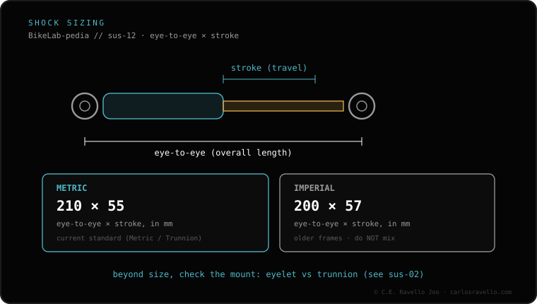

They aren't opposites and don't mean the same thing. "Metric" is a measuring system (in millimetres) and "trunnion" is a mounting type: a trunnion shock is also metric. The real difference is how it's held at the top. With the standard eyelet the shock has an eyelet with a bushing at both ends; with trunnion the bolts thread straight into the upper body, with no eyelet at the top, which shortens the eye-to-eye and leaves more room for bushings. They aren't interchangeable without the right frame. Before you buy, check the exact size your frame calls for; if you came from the suspension & dropper cluster, this is the first check.
The usual mix-up is treating "metric" and "trunnion" as two options on the same menu. They aren't: one is the size, the other is the mount.
Metric describes how the shock and its travel are measured, in millimetres. It's the measuring system that sets the length (eye-to-eye) and the stroke. It says nothing about how it mounts.
Trunnion describes how the shock mounts at the top. That's why a trunnion shock is also metric: it inherits the measuring system and adds its way of mounting. Saying "metric or trunnion" mixes two categories.
Standard eyelet. The shock has an eyelet at each end, and inside each eyelet sits a bushing the bolt passes through. Top and bottom, the mounting is the same.
Trunnion. There's no eyelet at the top: the bolts thread directly into the upper body of the shock. By removing the top eyelet, the eye-to-eye shortens and there's more room for bushings. At the bottom it usually keeps the eyelet with a bushing, like the standard.

The frame decides the mount type, not you. To buy without a mistake, first get the eye-to-eye and stroke your frame calls for, and confirm whether the mount is an eyelet or trunnion while you're at it. If you've come from the suspension & dropper cluster, this is the first check before touching anything else.
Send us your frame model and your shock size and we'll tell you whether it's a standard eyelet or trunnion. Message us on WhatsApp
No, nor opposites. Metric is the measuring system in mm; trunnion is a mounting type. A trunnion shock is also metric.
The standard has an eyelet with a bushing at both ends; trunnion threads the bolts straight into the upper body, with no eyelet at the top. That shortens the eye-to-eye.
Not without the right frame. The mount is defined by the frame, not the shock.